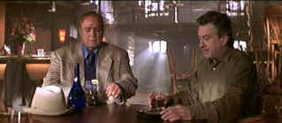

| Score,
The (SE)/ B+, A- |
| Paramount/2001/124/ANA
2.35 |
The Score has the makings of a great heist
flick. It's very good but it fails to capitalize on the polished
precision banked in its earliest scenes. The characters are interesting.
The set-up has been done before, but coupled with the players, it moves
two rungs up. One last job and so forth. Older crook and young crook
butting heads. So what if it's been done before.
Nick is the sophisticated professional who owns
a Montreal jazz club and funds his passions with methodical
criminal pursuits. He's a top notch burglar. Max is the beefy fence who
has worked with Nick twenty-five years, feeding him jobs and disposing
of the booty. Jack is the new kid in town with a career capping job in
need of Nick's expertise.
Director Frank Oz does a great job detailing the mechanics of the
opening burglary. It's elegant and economical. I felt myself holding my breath.
He's great at establishing character with visual power. Even the Montreal
setting is delivered with consummate efficiency.
 |
| Max
tempts Nick. ©Paramount |
Robert DeNiro is rock solid as Nick. The actor’s own
professionalism melds with the character. Part of the problem is that
Nick is too good to let things go where they go. Yes, the script
cleverness deals with that, but it’s not the way it would have gone
down. Edward Norton stands toe to toe with DeNiro in The Score,
delivered an interesting performance. Brando's Max, a fat and
sweaty world-weary eccentric adds a nice touch to the mix. Angela Bassett
has a supporting role as Diane, Nick's stewardess lady friend. She's
excellent as always. I really wanted more of her relationship with Nick.
I felt slightly cheated. Oz was probably right in keeping the relationship
sketchy, but I sensed there was very good potential left under the
sheets.
Beautifully shot
by cinematographer Rob Hahn. Very shadowy film. Frank Oz paces it well.
Oz is a director who communicates a love for his work
on the screen. That’s a pretty high compliment. He can tell a story,
set a scene graphically and he’s not too showy.
More Jazz please. Nick's a jazz club owner. The music fits very well
with the material. How come the film score did not capture that flavor.
It was have given it a more interest accompaniment.
This one sports an
excellent transfer. Tough, tough material. It’s so dark. I remember
seeing it in the theater and thinking, this will be a toughie for DVD.
Paramount scores with The Score. It’s like a polished mahogany
furniture. It retains its dark beauty but shines proudly. The
images are very sharp. You can look into the eyes of any characters and
sense their process. All the elements of the production design get
proper exposure through the outstanding resolution. The active lighting
of DP Hahn fairs very well. Shadow detail is consistently excellent.
Color is dead nuts on and blacks are lustrous.
There's a twelve minute making of featurette. How
about a five minute Brando/DeNiro improv doing a small scene on three
alternate takes? Short but bracing. The commentary by director Oz and
cinematographer Rob Hahn is excellent. It's technically oriented, but
integrates observations with story points well. The DVD commentary was
recorded in July a couple of days after The Score opened theatrically.
|
|
|
|

Selections from the Feature
Archive include articles on
Akira Kurosawa, Frank
Darabont, Blonde
Bimbos, Hollywood
Street Gangs, or Vietnam:
The Hollywood Pariah, and many more....

Click on the image of The
Heistmasters for an interesting feature on the tough guys
that pull off the big jobs.


Glenn Erickson's insightful DVD reviews have been a Internet fixture for
several years. Check out some of his sophisticated feature articles.
Currently hosted by DVD Talk.

ISF Monitor
Calibrations in the Tristate New York area. Lots of hardware info
and frequent hardware peaks from video expert Kevin Miller. They may be
judgmental, but that's the point, isn't it. Lots of DVD reviews plus
news and more.

DVD Price Search
Everything you wanted to know about animation on
DVD. Reviews, news, forum. Webmaster Chris
Beveridge.

Mystery writer Fred Hunter digs into classic
films on DVD. Check out his insightful reviews at The
Classics on DVD.

Excellent resource for movie review links,
with many early looks.

To
Kill a Mockingbird (SE)/ A,A

From the great novel by
Harper Lee, this tale of growing up in the 1930s South is splendidly
evocative of place and period. Gregory Peck is splendid. Direction
impeccable.
|